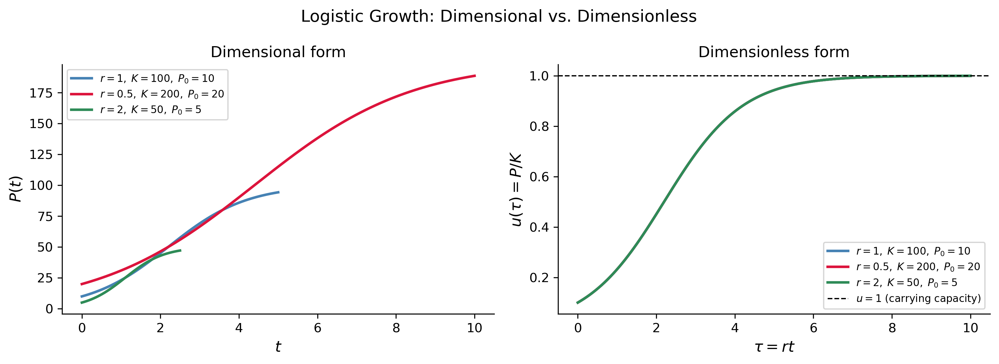
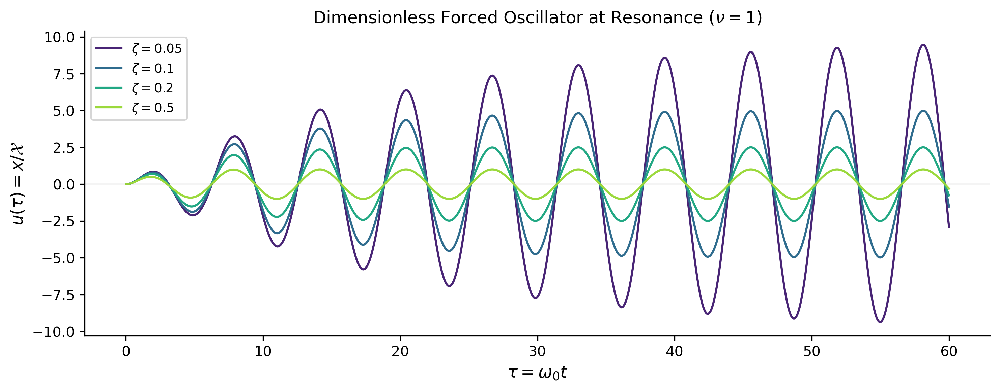

import numpy as npimport sympy as symimport matplotlib as mplimport matplotlib.pyplot as pltfrom scipy.integrate import solve_ivpfrom IPython.display import Math, displaympl.rcParams['figure.dpi'] =150mpl.rcParams['axes.spines.top'] =Falsempl.rcParams['axes.spines.right'] =False
This section covers the basics of dimensional analysis and the process of non-dimensionalizing a differential equation. These are powerful and broadly applicable techniques that:
reveal the essential parameters governing a system by reducing many dimensional parameters to a smaller number of dimensionless groups;
simplify numerical work by scaling variables to order-unity size;
expose the natural time, length, and amplitude scales built into a problem;
allow meaningful comparisons between physically different systems that share the same dimensionless equations.
These ideas are standard tools in applied mathematics, physics, and engineering, and they appear throughout the analysis of ODEs. Good introductory references are Logan (2015) (Section 1.2), Strogatz (2015) (Section 3.5), and the Wikipedia article on nondimensionalization.
Dimensions and Units
Every measurable physical quantity has a dimension (or unit dimension), that is, a qualitative description of what kind of thing is being measured. This is typically known as a unit which is a conventional standard for expressing that dimension numerically.
The Fundamental Dimensions
In mechanics the three fundamental dimensions are:
Symbol
Dimension
\(\mathsf{M}\)
Mass
\(\mathsf{L}\)
Length
\(\mathsf{T}\)
Time
Every other mechanical quantity is expressed as a product of powers of these. We write \([Q]\) for the dimension of quantity \(Q\). For example:
Quantity
Dimension
SI Unit
Time \(t\)
\(\mathsf{T}\)
second (s)
Length/position \(x\)
\(\mathsf{L}\)
metre (m)
Velocity \(v = dx/dt\)
\(\mathsf{L}\,\mathsf{T}^{-1}\)
m s\(^{-1}\)
Acceleration \(a = d^2x/dt^2\)
\(\mathsf{L}\,\mathsf{T}^{-2}\)
m s\(^{-2}\)
Mass \(m\)
\(\mathsf{M}\)
kilogram (kg)
Force \(F = ma\)
\(\mathsf{M}\,\mathsf{L}\,\mathsf{T}^{-2}\)
newton (N)
Energy \(E\)
\(\mathsf{M}\,\mathsf{L}^{2}\,\mathsf{T}^{-2}\)
joule (J)
Population \(P\)
dimensionless
individuals
Rate constant \(r\)
\(\mathsf{T}^{-1}\)
per second
ImportantThe Principle of Dimensional Homogeneity
Every term in a physically meaningful equation must have identical dimensions. An equation that adds a length to a time, for instance, is dimensionally inconsistent and cannot be correct.
This principle is both a consistency check and a discovery tool: if a proposed formula is dimensionally inconsistent, it is wrong; if you know the dimensions of the answer, you can often guess the form of the formula.
Dimensional Analysis: A Simple Example
Suppose a pendulum of length \(\ell\) swings under gravity \(g\) (with \([g] = \mathsf{L}\,\mathsf{T}^{-2}\)). What is the period \(\tau\)?
We expect \(\tau = C\,\ell^a g^b\) for some pure number \(C\) and unknown exponents \(a, b\). Matching dimensions: \[
[\tau] = \mathsf{T} = \mathsf{L}^a \cdot (\mathsf{L}\,\mathsf{T}^{-2})^b = \mathsf{L}^{a+b}\,\mathsf{T}^{-2b}.
\] Equating exponents: \(-2b = 1 \Rightarrow b = -\tfrac{1}{2}\); \(a + b = 0 \Rightarrow a = \tfrac{1}{2}\). Therefore \[
\tau = C\sqrt{\frac{\ell}{g}}.
\] Dimensional analysis alone tells us the \(\sqrt{\ell/g}\) scaling; a full solution of the pendulum ODE gives \(C = 2\pi\).
If a physical relationship involves \(n\) dimensional quantities built from \(k\) independent fundamental dimensions, then it can be expressed as a relationship among \(n - k\)dimensionless groups\(\Pi_1, \Pi_2, \ldots, \Pi_{n-k}\).
Each \(\Pi_i\) is a product of powers of the original quantities chosen so that all dimensions cancel. The theorem guarantees that reducing \(n\) parameters to \(n-k\) dimensionless groups is always possible and that nothing is lost in doing so.
Non-Dimensionalization of an ODE
Non-dimensionalization is the process of rescaling the dependent and independent variables of a differential equation so that all variables and parameters become dimensionless. The procedure is:
Identify all dimensional quantities in the ODE (variables, parameters, forcing terms) and record their dimensions.
Choose characteristic scales — a reference value with the correct dimension — for each variable. These scales should be natural to the problem (e.g., set by a parameter already present).
Introduce dimensionless variables by dividing each dimensional variable by its characteristic scale.
Substitute into the ODE and simplify. Collect the parameters into dimensionless groups.
Interpret the dimensionless groups: each one represents a physically meaningful ratio, and its size tells you which effects dominate.
We now apply this procedure to two important examples.
Example 1 — The Logistic Growth Model
The Dimensional Equation
The logistic equation for a population \(P(t)\) is \[
\frac{dP}{dt} = rP\!\left(1 - \frac{P}{K}\right), \qquad P(0) = P_0,
\] where:
Parameter
Meaning
Dimension
\(P\)
population size
\(\mathsf{N}\) (number of individuals)
\(t\)
time
\(\mathsf{T}\)
\(r > 0\)
intrinsic growth rate
\(\mathsf{T}^{-1}\)
\(K > 0\)
carrying capacity
\(\mathsf{N}\)
\(P_0\)
initial population
\(\mathsf{N}\)
Here we use \(\mathsf{N}\) (number) as a fourth dimension for population counts, though it is often treated as dimensionless in practice.
The equation has three dimensional parameters: \(r\), \(K\), \(P_0\).
Choosing Characteristic Scales
Population scale. The carrying capacity \(K\) is the natural population scale, since it is the only characteristic population size built into the equation. Set \(\mathcal{P} = K\).
Time scale. The growth rate \(r\) has dimension \(\mathsf{T}^{-1}\), so \(\mathcal{T} = 1/r\) is the natural time scale — it is the characteristic time over which the population changes appreciably.
Introducing Dimensionless Variables
Define \[
u = \frac{P}{K}, \qquad \tau = r\,t.
\] Both \(u\) and \(\tau\) are dimensionless by construction. Note that \(P = Ku\) and \(t = \tau/r\), so \[
\frac{dP}{dt} = \frac{d(Ku)}{d(\tau/r)} = Kr\,\frac{du}{d\tau}.
\]
The original ODE had three parameters \((r, K, P_0)\). The non-dimensionalized ODE has one parameter \(u_0 = P_0/K\) — the initial population expressed as a fraction of the carrying capacity. The parameters \(r\) and \(K\) have been entirely absorbed into the rescaled variables; they set the scales but do not alter the shape of the solution.
Tip
This means that two logistic populations with different values of \(r\) and \(K\) but the same ratio \(P_0/K\) follow exactly the same dimensionless trajectory. Non-dimensionalization makes this universality explicit.
The solution in dimensionless variables (from our earlier work) is \[
u(\tau) = \frac{u_0}{u_0 + (1 - u_0)e^{-\tau}},
\] and converting back: \(P(t) = K\,u(rt)\).
Comparison: Dimensional vs. Dimensionless Solutions
Show the code
# Three different (r, K, P0) sets that share the same u0 = P0/K = 0.1configs = [dict(r=1.0, K=100, P0=10, label=r'$r=1,\;K=100,\;P_0=10$', color='steelblue'),dict(r=0.5, K=200, P0=20, label=r'$r=0.5,\;K=200,\;P_0=20$', color='crimson'),dict(r=2.0, K=50, P0=5, label=r'$r=2,\;K=50,\;P_0=5$', color='seagreen'),]fig, axes = plt.subplots(1, 2, figsize=(11, 4))for cfg in configs: r, K, P0 = cfg['r'], cfg['K'], cfg['P0'] u0 = P0 / K# Dimensional time axis: show ~5 intrinsic time scales t_dim = np.linspace(0, 5/ r, 400) P_sol = K * u0 / (u0 + (1- u0) * np.exp(-r * t_dim)) axes[0].plot(t_dim, P_sol, lw=2, color=cfg['color'], label=cfg['label'])# Dimensionless axis tau = r*t, same u0 tau = np.linspace(0, 10, 400) u_sol = u0 / (u0 + (1- u0) * np.exp(-tau)) axes[1].plot(tau, u_sol, lw=2, color=cfg['color'], label=cfg['label'])axes[0].set_xlabel('$t$', fontsize=12)axes[0].set_ylabel('$P(t)$', fontsize=12)axes[0].set_title('Dimensional form', fontsize=12)axes[0].legend(fontsize=8)axes[1].set_xlabel(r'$\tau = rt$', fontsize=12)axes[1].set_ylabel(r'$u(\tau) = P/K$', fontsize=12)axes[1].set_title('Dimensionless form', fontsize=12)axes[1].axhline(1, color='black', linestyle='--', lw=1, label='$u=1$ (carrying capacity)')axes[1].legend(fontsize=8)plt.suptitle('Logistic Growth: Dimensional vs. Dimensionless', fontsize=13)plt.tight_layout()plt.show()

Figure 1: Logistic growth: dimensional form (left) for three different parameter sets, and the corresponding dimensionless form (right). In dimensionless variables all three collapse onto a single curve determined solely by \(u_0 = P_0/K\), illustrating the power of non-dimensionalization.
Example 2 — The Forced Damped Oscillator
The Dimensional Equation
The equation of motion for a damped harmonic oscillator driven by a periodic force is \[
\frac{d^2x}{dt^2} + 2\gamma\frac{dx}{dt} + \omega_0^2\,x = \frac{F_0}{m}\cos(\Omega t),
\] where (using SI units for concreteness):
Parameter
Meaning
Dimension
\(x\)
displacement
\(\mathsf{L}\)
\(t\)
time
\(\mathsf{T}\)
\(\gamma > 0\)
damping coefficient (per unit mass)
\(\mathsf{T}^{-1}\)
\(\omega_0 > 0\)
natural angular frequency
\(\mathsf{T}^{-1}\)
\(F_0/m\)
forcing amplitude (per unit mass)
\(\mathsf{L}\,\mathsf{T}^{-2}\)
\(\Omega\)
driving frequency
\(\mathsf{T}^{-1}\)
Note
We write the damping term as \(2\gamma\) (rather than \(\gamma\)) purely as a notational convenience that simplifies the algebra later; \(\gamma\) is sometimes called the damping rate or decay rate.
The equation has four dimensional parameters: \(\gamma\), \(\omega_0\), \(F_0/m\), \(\Omega\).
Choosing Characteristic Scales
Time scale. The natural period of the oscillator, \(\mathcal{T} = 1/\omega_0\), is the obvious time scale.
Length scale. The static deflection produced by a constant force \(F_0/m\) against a spring of stiffness \(\omega_0^2\) is \(\mathcal{X} = (F_0/m)/\omega_0^2\). This is the natural amplitude scale.
Introducing Dimensionless Variables
Define \[
u = \frac{x}{\mathcal{X}} = \frac{x\,\omega_0^2}{F_0/m}, \qquad \tau = \omega_0\,t.
\] Then \(x = \mathcal{X}\,u\) and \(t = \tau/\omega_0\). Computing derivatives via the chain rule: \[
\frac{dx}{dt} = \mathcal{X}\,\omega_0\,\frac{du}{d\tau}, \qquad
\frac{d^2x}{dt^2} = \mathcal{X}\,\omega_0^2\,\frac{d^2u}{d\tau^2}.
\]
Substituting into the ODE
Replace each term: \[
\mathcal{X}\omega_0^2\,\frac{d^2u}{d\tau^2}
+ 2\gamma\,\mathcal{X}\omega_0\,\frac{du}{d\tau}
+ \omega_0^2\,\mathcal{X}\,u
= \frac{F_0}{m}\cos\!\left(\frac{\Omega}{\omega_0}\tau\right).
\] Divide every term by \(\mathcal{X}\omega_0^2 = F_0/m\): \[
\boxed{\frac{d^2u}{d\tau^2} + 2\zeta\,\frac{du}{d\tau} + u = \cos(\nu\tau),}
\] where we have introduced two key dimensionless groups:
The original ODE had four parameters \((\gamma, \omega_0, F_0/m, \Omega)\). After non-dimensionalization only two remain:
Group
Formula
Physical meaning
Damping ratio \(\zeta\)
\(\gamma/\omega_0\)
Ratio of damping rate to natural frequency
Frequency ratio \(\nu\)
\(\Omega/\omega_0\)
Ratio of driving frequency to natural frequency
The forcing amplitude \(F_0/m\) and natural frequency \(\omega_0\) have been absorbed entirely into the scales \(\mathcal{X}\) and \(\mathcal{T}\).
TipResonance
The dimensionless equation makes resonance transparent: the system is driven at its natural frequency when \(\nu = \Omega/\omega_0 = 1\). The concept of resonance is a statement about the ratio of frequencies, not their individual values — a fact that non-dimensionalization makes explicit.
The three classical damping regimes are determined entirely by \(\zeta\):
\(\zeta\)
Regime
Behavior
\(0 < \zeta < 1\)
Underdamped
Oscillatory decay toward steady state
\(\zeta = 1\)
Critically damped
Fastest non-oscillatory return to equilibrium
\(\zeta > 1\)
Overdamped
Slow exponential return, no oscillation
Steady-State Amplitude and Phase
For the non-dimensionalized driven oscillator, the steady-state (particular) solution has the form \[
u_p(\tau) = R(\nu,\zeta)\cos(\nu\tau - \phi),
\] where the amplitude response function and phase are \[
R(\nu,\zeta) = \frac{1}{\sqrt{(1-\nu^2)^2 + 4\zeta^2\nu^2}}, \qquad
\phi = \arctan\!\left(\frac{2\zeta\nu}{1-\nu^2}\right).
\]
Figure 2: Steady-state amplitude response \(R(\nu, \zeta)\) of the dimensionless forced oscillator as a function of the frequency ratio \(\nu = \Omega/\omega_0\) for several values of the damping ratio \(\zeta\). The peak shifts toward \(\nu=1\) as damping decreases, and the response diverges as \(\zeta \to 0\).
Solution Curves in the Dimensionless Variables
The following plot shows full numerical solutions (transient + steady state) of the dimensionless ODE for several damping ratios at the resonant driving frequency \(\nu = 1\).
Show the code
def forced_osc(tau, y, zeta, nu): u, v = yreturn [v, np.cos(nu * tau) -2* zeta * v - u]tau_span = (0, 60)tau_eval = np.linspace(*tau_span, 3000)zeta_list2 = [0.05, 0.1, 0.2, 0.5]colors2 = plt.cm.viridis(np.linspace(0.1, 0.85, len(zeta_list2)))fig, ax = plt.subplots(figsize=(10, 4))for zeta, color inzip(zeta_list2, colors2): sol = solve_ivp(forced_osc, tau_span, [0, 0], args=(zeta, 1.0), t_eval=tau_eval, max_step=0.05) ax.plot(sol.t, sol.y[0], lw=1.5, color=color, label=fr'$\zeta={zeta}$')ax.axhline(0, color='black', lw=0.5)ax.set_xlabel(r'$\tau = \omega_0 t$', fontsize=12)ax.set_ylabel(r'$u(\tau) = x / \mathcal{X}$', fontsize=12)ax.set_title(r'Dimensionless Forced Oscillator at Resonance ($\nu=1$)', fontsize=12)ax.legend(fontsize=9)plt.tight_layout()plt.show()

Figure 3: Solutions of the dimensionless forced oscillator \(u'' + 2\zeta u' + u = \cos(\tau)\) (resonant driving, \(\nu=1\)) for several damping ratios \(\zeta\). Initial conditions \(u(0)=0\), \(u'(0)=0\). As \(\zeta\) decreases the transient grows larger and decays more slowly.
Summary
The table below collects the key results from both examples.
Parameters are absorbed into scales. Characteristic scales are built from the parameters themselves, so those parameters disappear from the rescaled equation.
Fewer parameters means fewer cases to analyze. The forced oscillator went from four parameters to two; its entire behavior is catalogued by varying just \(\zeta\) and \(\nu\).
Natural scales reveal dominant physics. The time scale \(1/\omega_0\) says the oscillator “thinks in units of its natural period.” The amplitude scale \((F_0/m)/\omega_0^2\) says the oscillator measures displacement relative to its static deflection.
Non-dimensionalization is not unique. Different choices of scale are possible and may be more convenient for different regimes. The skill lies in choosing scales that make the dimensionless groups physically meaningful and of order one.
References
Logan, J David. 2015. A First Course in Differential Equations, Third Edition.